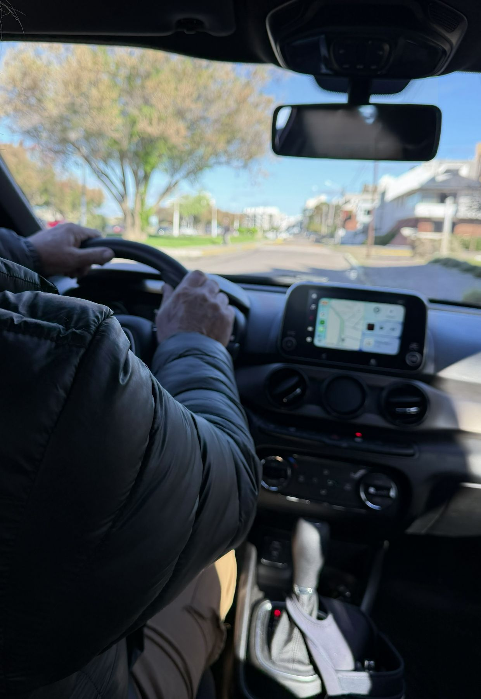

 VIMARTraslados
Traslados en Madryn y Trelew
VIMARTraslados
Traslados en Madryn y Trelew
Servicio privado y puntual, adaptado a tu viaje.
Nuestros servicios
-
Traslados
Dentro y fuera de la ciudad
-
Aeropuerto Madryn
Ida y vuelta a El Tehuelche
-
Aeropuerto Trelew
Desde y hacia Almirante Zar
-
Mensajería
Presentación de documentación
¿Adónde vas?
Elegí tu destino y mirá cuánto dura el viaje desde Puerto Madryn.
- Aeropuerto de Trelew: unos 60 km, 45 minutos.
- Aeropuerto de Puerto Madryn: unos 10 km, 20 minutos.
- Trelew (ciudad): unos 65 km, 50 minutos.
- Otros destinos: a cotizar según el recorrido.
Puerto Madryn a Aeropuerto de Trelew
A cotizar
Con tu número de vuelo seguimos la llegada, así te esperamos aunque se atrase.
Los tiempos son aproximados y dependen del tránsito y del clima.
¿Tenés un vuelo pendiente?
Contanos qué necesitás y te respondemos por WhatsApp con el horario y el precio.
ContactanosLo que cuentan nuestros pasajeros
-
Mi vuelo salía a las 6 de la mañana desde Trelew. Me buscaron a las 3:45 y viajé tranquila todo el camino.
LauraPuerto Madryn Llegó con tiempo para despachar el equipaje.
-
El vuelo se atrasó casi dos horas y el chofer me estaba esperando igual en el hall de arribos, con mi nombre en un cartel.
MartínBuenos Aires Llegó al hotel sin tener que buscar otro transporte.
-
Tenía que mandar papeles firmados a una escribanía de Madryn. Los retiraron de mi casa al mediodía.
GracielaTrelew Los documentos se entregaron esa misma tarde.
-
Viajamos en pareja con dos valijas grandes. Entró todo y el viaje desde el aeropuerto fue muy cómodo.
DiegoCórdoba Llegaron a Madryn con todo el equipaje en un solo viaje.
-
Mi mamá tenía un turno médico en Trelew y yo no podía acompañarla. La buscaron por casa y me avisaron cuando llegó.
RosaPuerto Madryn Llegó a horario a su turno, sin depender del colectivo.
-
Reservé por WhatsApp antes de salir de Rosario y en pocos minutos ya tenía confirmado el horario y el precio.
PabloRosario Tuvo el traslado resuelto antes de subir al avión.